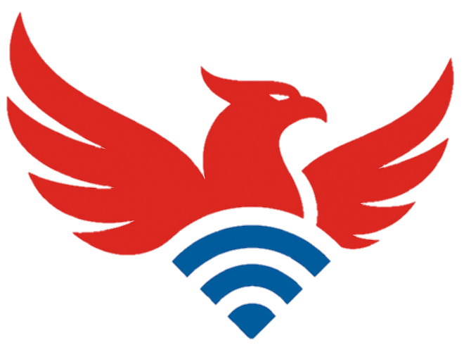

01
Internet Rumah
Menemani aktivitas belajar online, streaming, video call, dan berbagai kebutuhan digital keluarga.
Home Connectivity ↗Untuk belajar, bekerja, hiburan, hingga mengembangkan usaha. Garuda Net hadir membawa pengalaman internet yang praktis, nyaman, dan dekat dengan kebutuhan Anda.

Garuda Net adalah brand layanan internet yang berfokus pada kebutuhan konektivitas rumah, pelaku usaha, dan komunitas. Kami percaya bahwa akses internet yang baik membantu setiap orang bergerak lebih maju.
Dengan pendekatan layanan yang dekat dengan pelanggan dan dukungan kemitraan bersama ASNET, kami berupaya menghadirkan koneksi yang relevan dengan kebutuhan digital sehari-hari.
Mulai dari aktivitas harian di rumah hingga operasional usaha yang membutuhkan koneksi.
Menemani aktivitas belajar online, streaming, video call, dan berbagai kebutuhan digital keluarga.
Home Connectivity ↗Mendukung pekerjaan, komunikasi, dan aktivitas operasional bisnis yang mengandalkan internet.
Business Connectivity ↗Menyediakan pilihan konektivitas untuk lingkungan dan komunitas sesuai ketersediaan layanan.
Community Connectivity ↗Pengalaman konektivitas bukan hanya soal kecepatan. Kami menaruh perhatian pada kemudahan memilih layanan dan komunikasi dengan pelanggan.
Paket layanan dapat dipilih berdasarkan kebutuhan penggunaan dan anggaran.
Saluran konsultasi untuk membantu Anda memahami pilihan layanan yang tersedia.
Garuda Net bermitra dengan ASNET dalam mendukung penyelenggaraan konektivitas.
Fokus pada penggunaan internet sehari-hari di rumah, tempat kerja, dan lingkungan.
Temukan pilihan paket internet rumahan Garuda Net. Harga dan kecepatan resmi akan ditampilkan setelah disesuaikan dengan brosur terbaru.
Promo yang pernah direncanakan; konfirmasi periode, syarat, dan ketersediaan sebelum pemesanan.
*Harga, Mbps, biaya pemasangan, dan ketentuan promo harus diverifikasi sesuai brosur resmi sebelum website dipublikasikan sebagai penawaran komersial. Area pemasangan mengikuti cakupan jaringan.
Punya pertanyaan lain? Hubungi WhatsApp 0812-8610-4276, atau isi formulir jika ingin mendaftar.
Ya. Garuda Net menawarkan solusi internet untuk kebutuhan rumah tangga sesuai area yang telah terjangkau jaringan.
Pilihan paket internet rumahan tersedia di bagian Paket Internet. Harga dan kecepatan akan ditampilkan setelah data brosur terbaru diverifikasi.
Ada pilihan layanan untuk kebutuhan usaha. Kebutuhan penggunaan dan area akan didiskusikan terlebih dahulu sebelum penawaran.
Ketersediaan instalasi bergantung pada jangkauan infrastruktur. Hubungi tim untuk mengecek area Anda.
Untuk pertanyaan dan konsultasi, hubungi WhatsApp Garuda Net. Jika sudah ingin berlangganan atau mengajukan pemasangan, silakan isi formulir pendaftaran resmi.